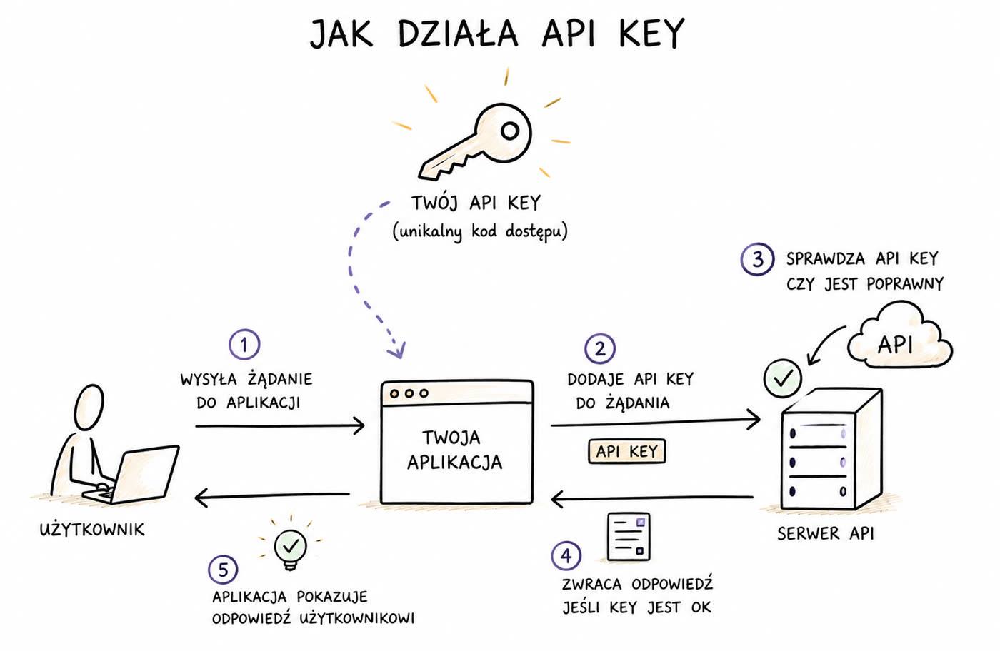
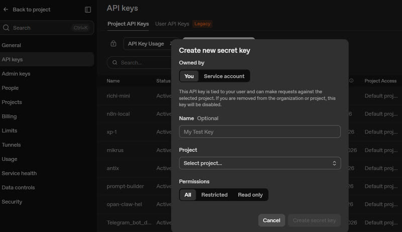
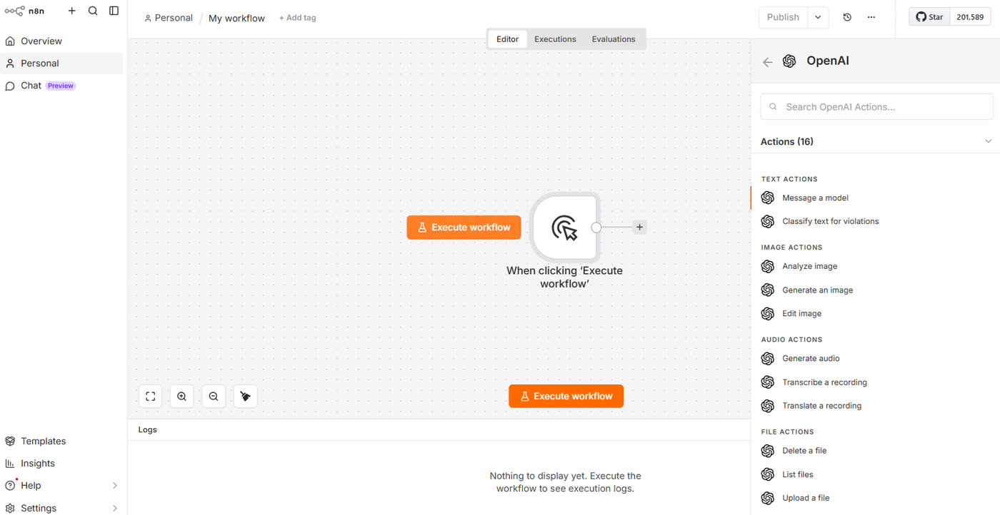
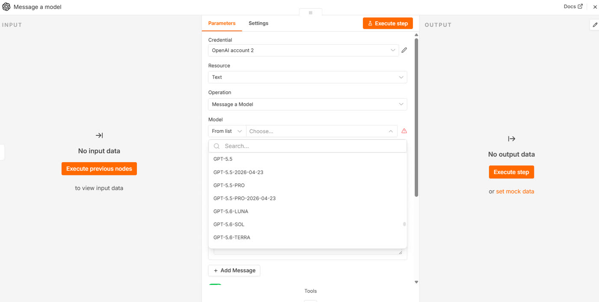
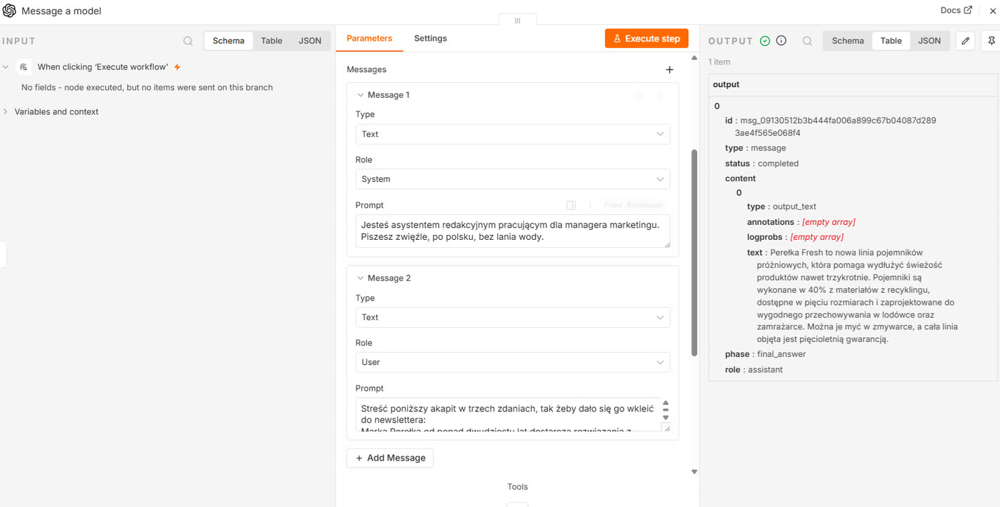
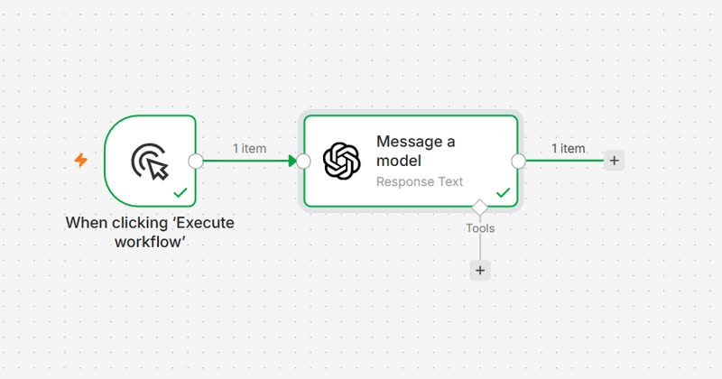
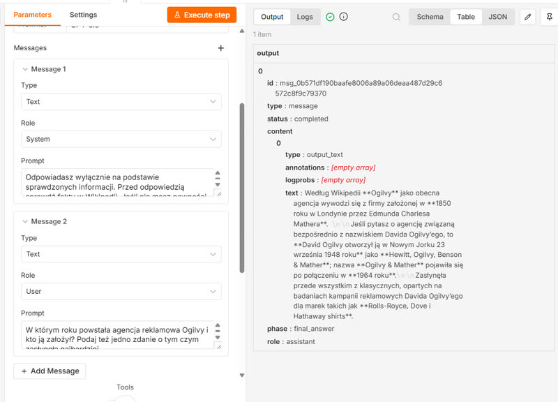

Rozdział 4
Rozdział 4. Podłączamy AI
Do tej pory każdy węzeł w twoim przepływie był doskonale przewidywalny: przy tych samych danych na wejściu robił zawsze dokładnie to samo. Filtr przepuszczał to, co pasowało do warunku, i nic poza tym. Teraz dołożysz pierwszy węzeł, który przy tym samym pytaniu potrafi odpowiedzieć dwa razy inaczej. Wszystko, co dziś sprzedaje się pod słowem „AI", sprowadza się w przepływie do jednej zmiany: jeden z kroków przestaje wykonywać regułę i zaczyna podejmować decyzję.
Pytanie na start: co to jest klucz API i skąd go wziąć?
Zanim węzeł sztucznej inteligencji - np. wybrany model ChatGPT od OpenAI - cokolwiek zrobi, będziesz potrzebować klucza API - czyli ciągu znaków, który mówi serwerom OpenAI, że to naprawdę ty wysyłasz zapytanie i że wolno cię obciążyć za jego koszt. To w zasadzie ten sam mechanizm jak dane dostępowe do Gmaila z rozdziału 3, tyle że tym razem nie logujesz się przez Google, tylko wklejasz gotowy kod.
Samo API (Application Programming Interface) to zaś zestaw narzędzi, protokołów i definicji, które umożliwiają różnym aplikacjom komunikację ze sobą. API działa w tym przypadku jak pośrednik, który pozwala jednej aplikacji korzystać z funkcjonalności innej bez konieczności poznawania jej wewnętrznej struktury.

Otwórz w nowej karcie przeglądarki stronę platform.openai.com i zaloguj się na swoje konto (albo załóż nowe, jeśli jeszcze go nie masz). Możesz też wejść bezpośrednio na stronę: https://platform.openai.com/organization/api-keys
Z menu po lewej stronie wybierz „API keys" (klucze API), a potem kliknij „Create new secret key" (utwórz nowy tajny klucz).

Nadaj kluczowi nazwę, na przykład „n8n", i potwierdź utworzenie. Na ekranie zobaczysz: swój nowy klucz w całości - to jedyny moment, w którym zobaczysz go w pełnej postaci. Skopiuj go od razu przyciskiem obok i zapisz tymczasowo w bezpiecznym miejscu, na przykład w menedżerze haseł.
Dodajesz węzeł OpenAI do przepływu
Wróć do n8n i utwórz nowy, pusty przepływ - tak jak w rozdziale 3. Dodaj węzeł „Manual trigger" (uruchom ręcznie), już znajomy z poprzednich rozdziałów.
Kliknij znak plus przy prawej krawędzi wyzwalacza. W polu wyszukiwania wpisz „OpenAI". Zamiast pojedynczego wyniku zobaczysz listę akcji pogrupowanych w sekcje: TEXT ACTIONS, IMAGE ACTIONS, AUDIO ACTIONS i inne. W sekcji TEXT ACTIONS kliknij „Message a model" (wyślij wiadomość do modelu). Na ekranie zobaczysz: nowy węzeł na obszarze roboczym i otwarty panel z polami „Credential to connect with", „Model" i „Messages".

Otwórz węzeł dwukrotnym kliknięciem. Na samej górze panelu jest pole „Credential" (dane dostępowe). Rozwiń je i wybierz „Create new credential" (utwórz nowe dane dostępowe).
Otworzy się osobne okno z jednym polem: „API Key". Wklej w nie klucz skopiowany w kroku 3 (uważaj, żeby nie złapać spacji na początku ani na końcu). Kliknij „Save" (zapisz).
Na ekranie zobaczysz: zielony komunikat potwierdzający, że połączenie działa. Zamknij okno danych dostępowych. W polu „Credential" widnieje teraz nazwa twojego nowego połączenia, na przykład „OpenAI account".
Klucz wklejasz w n8n tylko raz. Od tej chwili będzie się pojawiał na liście w każdym nowym węźle OpenAI, który dodasz w dowolnym przepływie. To samo dotyczy połączenia z Gmailem z rozdziału 3. Wszystkie zapisane dane dostępowe znajdziesz w menu bocznym n8n, w sekcji „Credentials", i tam też je usuniesz albo podmienisz, gdy klucz przestanie działać.
W polu „Model" wybierz najtańszy dostępny model z rodziny GPT-4o - w chwili pisania jest to gpt-4o-mini. Lista modeli pobiera się na żywo z twojego konta OpenAI, więc może wyglądać inaczej niż na zrzucie.

Piszesz pierwsze polecenie
Dobre polecenie dla modelu działa trochę tak jak dobre zlecenie dla nowego stażysty - musi powiedzieć mu, kim ma być, co konkretnie ma zrobić i w jakiej formie oddać wynik.
W sekcji „Messages" (wiadomości) ustaw na liście „Type" wartość „text". Następnie kliknij „Add Message" (dodaj wiadomość) i ustaw „Role" (rola) na „System". W polu tekstowym opisz, kim ma być model i jak się zachowywać, na przykład: „Jesteś asystentem redakcyjnym pracującym dla managera marketingu. Piszesz zwięźle, po polsku, bez lania wody."
Dodaj drugą wiadomość, tym razem z rolą „User" (użytkownik). To jest właściwe zadanie - konkretny tekst do przetworzenia, na przykład: „Streść poniższy akapit w trzech zdaniach, tak żeby dało się go wkleić do newslettera:" i wklej dowolny fragment tekstu, choćby opis produktu ze swojej strony.
Kliknij „Execute step". Na ekranie zobaczysz: w panelu OUTPUT rozwinięte drzewko z kilkoma pozycjami, między innymi id, type, status i content. W polu text pojawi się twoje streszczenie.
Model nie odpowiada samym tekstem. Odpowiada całą kartą informacji o odpowiedzi: kiedy powstała, jaki ma numer, czy zakończyła się poprawnie i dopiero na końcu, co właściwie napisał.
Z tej karty interesuje cię w tej chwili jedno pole, text. Reszta przyda się później. Zobaczysz też dwa pola opisane czerwonym [empty array]. To nie jest błąd. To znaczy „tu nic nie ma", bo model nie miał czego dopisać.

Zmień teraz jedno słowo w poleceniu systemowym - na przykład każ modelowi pisać żartobliwie zamiast rzeczowo - i uruchom węzeł jeszcze raz. Teraz przy tej samej treści wejściowej pojawi się inny ton na wyjściu.
Model dostaje narzędzie
Zerknij jeszcze raz na swój przepływ. Pod węzłem „Message a model" wisi jakaś dziwna wypustka podpisana „Tools" (narzędzia) ze znakiem plus. Wszystkie połączenia, które robiłeś do tej pory, biegły z lewej na prawo. To jedno biegnie z dołu do góry i znaczy coś zupełnie innego.
Połączenie z lewej strony wnosi dane do przetworzenia. Połączenie od dołu nie wnosi danych. Wyposaża węzeł. Mówi modelowi: „masz do dyspozycji jeszcze to coś".

Kliknij plus przy „Tools". W polu wyszukiwania wpisz „Wikipedia" i wybierz węzeł „Wikipedia".
Na ekranie zobaczysznowy, mniejszy węzeł doczepiony od spodu do węzła „Message a model", połączony z nim krótką linią. Nie ma w nim nic do ustawiania („This node does not have any parameters"). Zamknij zatem panel.
Wróć do węzła „Message a model" i podmień obie wiadomości. W wiadomości z rolą „System" wpisz:
„Odpowiadasz wyłącznie na podstawie sprawdzonych informacji. Przed odpowiedzią sprawdź fakty w Wikipedii. Jeśli nie masz pewności, napisz NIE WIEM."
W wiadomości z rolą „User" wpisz konkretne pytanie o fakty, na przykład:
„W którym roku powstała agencja reklamowa Ogilvy i kto ją założył? Podaj też jedno zdanie o tym, czym zasłynęła najbardziej."
Kliknij „Execute step" i przyjrzyj się panelowi OUTPUT. Oprócz samej odpowiedzi zobaczysz w nim ślad po tym, że model sięgnął po narzędzie: wpis z zapytaniem, które sam ułożył, i z tym, co Wikipedia mu odesłała.

Ile to kosztuje
Gmail z rozdziału 3 był darmowy - wysyłanie maili w twoim imieniu nic nie kosztowało. Węzeł OpenAI jest inny: każde „Execute step" to prawdziwe zapytanie do serwerów OpenAI, a ty płacisz za nie według długości zarówno polecenia, jak i odpowiedzi, liczonej w małych jednostkach tekstu zwanych tokenami. Tańsze modele, takie jak gpt-4o-mini, kosztują ułamki centa za pojedyncze uruchomienie.
Sto takich uruchomień, jak to, które właśnie wykonałeś, kosztuje przy najtańszym modelu około dwóch centów, czyli mniej niż dziesięć groszy. Tysiąc kosztuje mniej niż złotówkę. Nie znaczy to, że koszt jest nieistotny. Rachunek zaczyna być jednak widoczny dopiero wtedy, gdy przepływ działa sam, codziennie, na kilkudziesięciu elementach naraz. Do tego wrócimy w rozdziale 5.
Co może pójść nie tak
- Węzeł zgłasza błąd „401 Unauthorized: Incorrect API key provided". Klucz API jest błędny albo niekompletny - sprawdź, czy skopiowałeś go w całości, bez spacji na początku lub końcu.
- Ten sam błąd 401 pojawia się mimo poprawnego klucza. Na koncie OpenAI nie ma podpiętej metody płatności albo ustawionego limitu wydatków - sprawdź zakładkę „Billing".
- Węzeł zgłasza błąd o przekroczonym limicie zapytań albo braku środków (komunikat zawiera „rate limit" albo „insufficient_quota"). Poczekaj chwilę i spróbuj ponownie, a jeśli się powtarza, sprawdź limit wydatków na koncie OpenAI.
- Zamknąłeś stronę OpenAI, zanim skopiowałeś klucz, i teraz nie możesz go nigdzie znaleźć. Klucze API są pokazywane w pełnej postaci tylko raz - wróć do „API keys" i utwórz nowy.
- Węzeł zgłasza błąd, że wybrany model nie istnieje. Nazwa modelu w rozwijanym polu mogła się zmienić od czasu napisania tego rozdziału - wybierz najbliższy odpowiednik z rodziny GPT.
Wariacje na temat
Zmień model na inny z tej samej rodziny i zapuść to samo polecenie jeszcze raz. Porównaj różnicę w jakości odpowiedzi.
Przepisz polecenie systemowe tak, żeby zmienić formę wyniku - punktory zamiast zdań, inny język, krótszy albo dłuższy tekst. Ta sama treść wejściowa da bardzo różne wyniki, w zależności od tego, jak dokładnie opiszesz oczekiwaną formę.
Model językowy nie ma pojęcia o twojej marce, dopóki mu o niej nie powiesz - a to jest dokładnie ta sama zasada, która rządziła każdym dobrym briefem, zanim ktokolwiek wymyślił słowo „prompt".